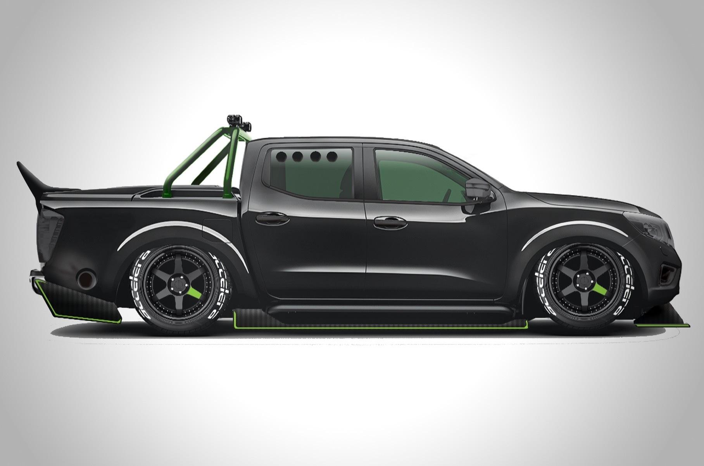
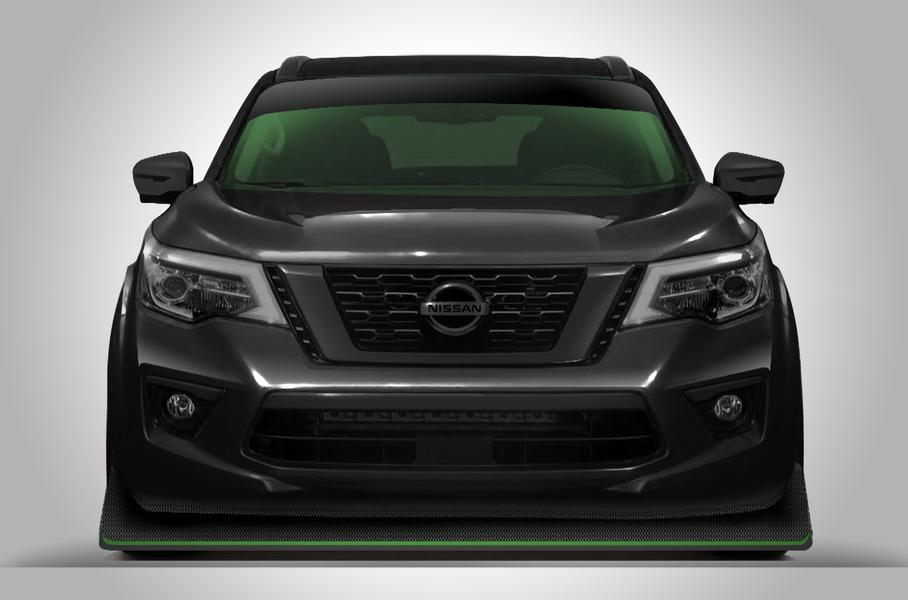
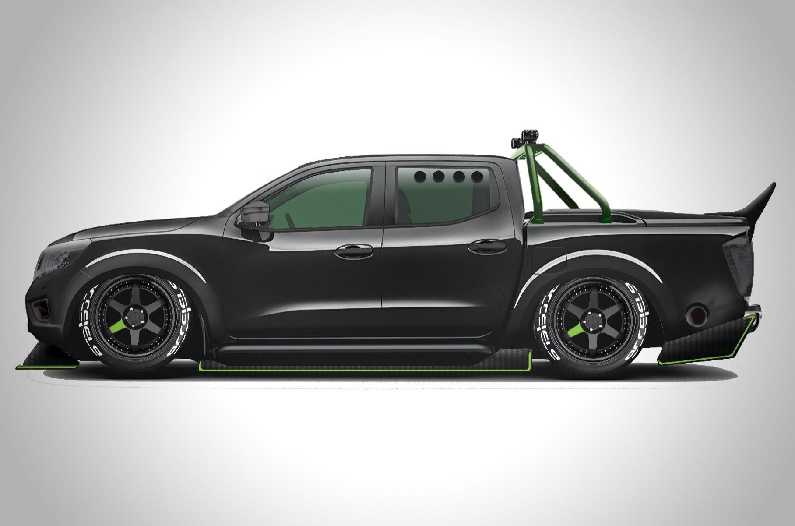

Датой основания корпорации считается 26 декабря 1933 года, когда в результате слияния компаний «Тобата имоно» и «Нихон сангё»
была создана новая компания, которая с 1 июня 1934 года носит название «Ниссан мотор».
В мае 1935 года компания приняла решение о развитии торговой марки «Ниссан», но практически до 1980-х годов лицом компании были различные модификации
автомобилей «Datsun», выпускавшихся ещё до создания компании (в 1986 году эта марка перестала существовать, а в 2013 году производство автомобилей Datsun было возобновлено).
С начала 1950-х годов компания активно и успешно стала заниматься разработкой и производством ракетных двигателей, установок для запуска ракет,
а затем решила расширить производственную сферу, занявшись также и производством двигателей для кораблестроительной отрасли.
В 1958 году начались поставки автомобилей в США, а в 1964 году стала первой японской компанией, вошедшей в десятку крупнейших автоимпортёров в США.
В 1962 году начались поставки автомобилей в Европу.
К середине 1990-х годов компания испытывала существенные финансовые трудности, деятельность была неэффективной; долги составляли 12 млрд долл.
и до банкротства оставалось несколько недель. В итоге в 1999 год контрольный пакет акций компании был продан французской Рено (Renault): французской
компании принадлежит 44,4 % акций Ниссан, а Ниссан, в свою очередь, владеет 15 % акций Рено.
Ниссан принадлежит ряд автомобилестроительных предприятий в Японии, Великобритании, США, Мексике, ЮАР и т. д.
С 1985 года в рамках компании функционирует Nismo — подразделение, занимающееся тюнингом автомобилей. Помимо этого, компания владеет долей в Nissan Marine,
совместном предприятии с Marubeni, выпускающем двигатели для моторных лодок.
Общее количество занятых по состоянию на 2005 год составило около 160 тыс. человек.
В 2007 финансовом году (закончился 31 марта 2008 года) компания продала 3,77 млн автомобилей. Консолидированная выручка за этот период составила 10,824
трлн иен (94,62 млрд долл.), прибыль — 482,3 млрд иен (4,22 млрд долл., за 2005 год — 4,787 млрд долл.). Продажи за 2009 год составили около 3,1 млн автомобилей,
без учёта стратегического партнёра Ниссан — компании Рено.


